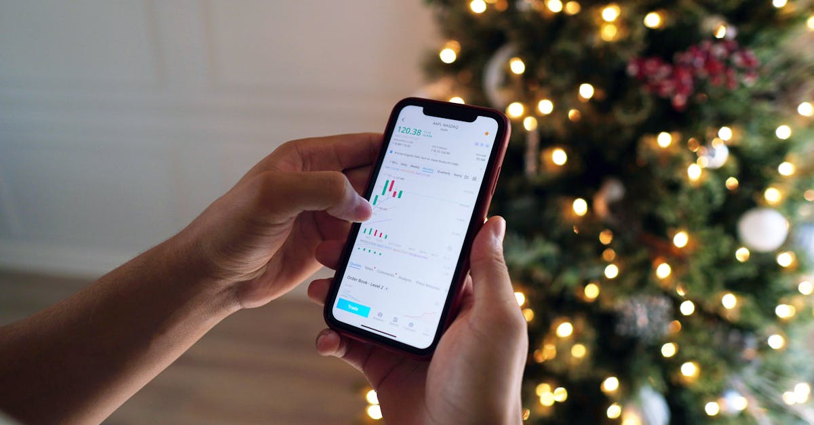

Le Week-end, Nouveau Terrain de Jeu de l'Information Financière
Alors que les marchés boursiers ferment leurs portes, l'écosystème de l'information financière, lui, ne prend jamais de pause. L'émission de Bloomberg du week-end du 18 avril 2026, animée par David Gura, Christina Ruffini et Lisa Mateo, mettait en lumière cette réalité : l'actualité financière est un flux continu, débordant largement les heures de cotation traditionnelles. En direct de New York, les présentateurs ont décortiqué les grands titres, apportant clarté, contexte et une touche d'humour, prouvant ainsi que l'analyse ne s'arrête pas à la cloche de clôture. L'intervention du correspondant international de l'Associated Press, Philip Crowther, a permis d'élargir la perspective, reliant les événements locaux aux tendances globales. Cette approche holistique est essentielle pour comprendre les dynamiques complexes qui animent la finance moderne. Dans un monde où l'information circule à une vitesse fulgurante, savoir prendre du recul, analyser les signaux faibles et anticiper les mouvements futurs devient une compétence clé. C'est précisément dans ce contexte que les solutions d'épargne intelligente, capables de traiter et d'analyser un volume massif de données en temps réel, prennent tout leur sens. L'automatisation, loin d'être une simple tendance, se révèle être un levier stratégique pour naviguer dans cette complexité et optimiser la gestion de son patrimoine.
👉 À lire : Chine : La Fusion qui Crée un Géant Financier de 86 Milliards $
L'IA au Cœur des Stratégies des Géants de la Distribution
L'un des aspects les plus fascinants de cette discussion post-marchés concernait l'intégration croissante de l'intelligence artificielle dans des secteurs parfois insoupçonnés. Mike Maresca, Chief Technology & Information Officer chez Ulta, Nadine Graham, Senior VP & General Manager chez Sephora, Ekta Chopra, Chief Technology & AI Officer chez e.l.f. Beauty, et Brian Franz, Chief Technology Data & Analytics Officer chez Estee Lauder, ont partagé leurs expériences. Ces leaders technologiques ont révélé comment l'IA n'est plus une technologie futuriste, mais un outil opérationnel puissant, transformant la manière dont ces entreprises interagissent avec leurs clients, optimisent leurs chaînes d'approvisionnement et prennent des décisions stratégiques. L'analyse prédictive pour anticiper les tendances de consommation, la personnalisation de l'expérience client grâce à des algorithmes sophistiqués, ou encore l'optimisation des stocks via des modèles d'IA, ne sont que quelques exemples concrets. Ces avancées technologiques, bien qu'appliquées au secteur de la beauté et de la distribution, soulignent une tendance de fond : l'exploitation des données et de l'IA pour gagner en efficacité et en compétitivité. Pour l'investisseur particulier, cela signifie une opportunité de comprendre comment ces technologies redéfinissent la valeur des entreprises et où se trouvent les futurs relais de croissance. L'IA n'est plus seulement l'apanage des géants de la tech ; elle infuse tous les secteurs de l'économie, créant de nouvelles dynamiques et de nouveaux défis.
👉 À lire : L'IA dans la Beauté : Révolution et Opportunités d'Épargne
De la Donnée Brute à la Décision Éclairée : Le Rôle Clé de l'IA
La transformation numérique, accélérée par l'adoption massive de l'intelligence artificielle, remodèle fondamentalement le paysage économique. Les intervenants de Bloomberg ont mis en évidence comment des entreprises de divers horizons exploitent désormais l'IA pour extraire de la valeur de quantités massives de données. Brian Franz d'Estee Lauder a, par exemple, souligné l'importance de la data analytics pour comprendre les comportements des consommateurs à un niveau granulaire. Ekta Chopra d'e.l.f. Beauty a quant à elle insisté sur la capacité de l'IA à personnaliser les offres et à améliorer l'engagement client. Ces témoignages convergent vers une idée maîtresse : l'IA permet de passer d'une gestion réactive à une gestion proactive. Au lieu de réagir aux événements, les entreprises anticipent, prévoient et s'adaptent grâce à des algorithmes capables d'identifier des patterns et des corrélations invisibles à l'œil nu. Cette puissance d'analyse, autrefois réservée aux grandes institutions financières disposant d'équipes d'analystes pléthoriques, est aujourd'hui de plus en plus accessible. Pour l'épargnant, cela ouvre la voie à des stratégies d'investissement plus sophistiquées et potentiellement plus performantes. Comprendre comment l'IA traite l'information financière est donc crucial pour saisir les opportunités d'une épargne intelligente et véritablement optimisée, capable de s'adapter en permanence aux fluctuations du marché.

L'Automatisation : Un Levier pour une Épargne Performante et Accessible
L'une des implications majeures de l'essor de l'IA dans la finance est l'automatisation. Les discussions lors de l'émission de Bloomberg ont subtilement pointé du doigt une tendance de fond : la décentralisation et la démocratisation de l'expertise financière. Autrefois réservée aux conseillers financiers et aux gestionnaires de portefeuille, l'optimisation des placements devient de plus en plus accessible grâce à des outils automatisés. Ces systèmes, alimentés par des algorithmes d'IA, sont capables de prendre en compte une multitude de facteurs – volatilité des marchés, performance historique des actifs, objectifs personnels de l'investisseur, horizon de placement – pour construire et ajuster des portefeuilles personnalisés. L'avantage est double : une efficacité accrue grâce à une analyse constante et une accessibilité élargie. Plus besoin de disposer d'un capital initial colossal pour bénéficier d'une gestion de patrimoine sophistiquée. L'automatisation permet de réduire les coûts de gestion, d'éliminer les biais émotionnels humains (peur, avidité) qui nuisent souvent aux performances, et de réagir instantanément aux opportunités ou aux menaces du marché. C'est là que réside la promesse d'une épargne intelligente : une gestion pilotée par la technologie, disponible 24h/24 et 7j/7, visant à maximiser les rendements tout en maîtrisant les risques. Les leaders technologiques présents lors de l'émission, issus de secteurs variés, ont d'ailleurs tous souligné l'importance de l'efficacité opérationnelle permise par l'IA, un principe directement transposable à la gestion financière personnelle.
Les Défis de l'Intégration Technologique dans des Secteurs Traditionnels
Malgré les bénéfices évidents, l'intégration de l'IA et des technologies avancées soulève des défis considérables, comme l'ont laissé entendre les échanges entre les experts. Mike Maresca d'Ulta et Nadine Graham de Sephora ont, par exemple, évoqué la complexité de la gestion des données clients, la nécessité d'assurer leur sécurité et leur confidentialité, tout en les exploitant pour offrir une expérience personnalisée. La résistance au changement au sein des organisations, la formation des équipes à de nouveaux outils, et la nécessité d'adapter les infrastructures existantes sont autant d'obstacles à surmonter. Pour Brian Franz d'Estee Lauder, l'enjeu réside aussi dans la capacité à transformer une culture d'entreprise orientée produit vers une culture axée sur les données et l'analyse. Ces défis, bien que spécifiques à leurs industries, résonnent avec ceux rencontrés dans le domaine de l'investissement automatisé. La confiance dans les algorithmes, la transparence des processus de décision de l'IA, et la nécessité d'une supervision humaine restent des points cruciaux. Il ne s'agit pas de remplacer l'humain, mais de l'augmenter, de lui fournir des outils plus performants pour prendre de meilleures décisions. L'équilibre entre automatisation et jugement humain est la clé du succès, tant pour les entreprises que pour les investisseurs individuels cherchant à optimiser leur épargne. La maîtrise de ces technologies demande une veille constante et une adaptation rapide aux évolutions rapides du secteur.

Perspectives d'Avenir : L'IA comme Catalyseur de Croissance
L'avenir de l'investissement et de la gestion de patrimoine sera indéniablement façonné par l'intelligence artificielle. Les discussions autour des stratégies d'Ulta, Sephora, e.l.f. Beauty et Estee Lauder, bien que centrées sur leurs secteurs respectifs, illustrent une tendance universelle : l'IA comme moteur d'innovation et de croissance. Les entreprises qui sauront intégrer efficacement ces technologies seront celles qui prospéreront demain. Pour les particuliers, cela se traduit par une opportunité unique de bénéficier de ces avancées pour leur propre épargne. Imaginez un agent IA capable d'analyser en permanence les marchés mondiaux, d'identifier les opportunités d'investissement les plus prometteuses, d'évaluer les risques avec une précision inégalée et d'ajuster votre portefeuille en temps réel, le tout 24h/24. C'est la promesse d'une gestion financière proactive et optimisée, libérée des contraintes humaines et des biais émotionnels. Les technologies évoquées par les responsables d'Ulta ou Sephora, comme la personnalisation de l'expérience client, trouvent un écho direct dans la personnalisation des stratégies d'investissement. L'objectif est de créer des solutions sur mesure, adaptées aux objectifs et au profil de risque de chaque épargnant. L'IA n'est pas seulement une tendance technologique ; c'est une révolution qui redéfinit les règles du jeu, offrant des perspectives de performance et d'accessibilité sans précédent pour la gestion de votre argent.
L'Humour et la Clarté : Des Atouts dans l'Analyse Financière
Ce qui ressort également des interventions des animateurs de Bloomberg, David Gura, Christina Ruffini et Lisa Mateo, c'est l'importance de rendre l'information financière complexe accessible et compréhensible. Leur approche, mêlant clarté, contexte et une pointe d'humour, est essentielle pour démystifier le monde de la finance, souvent perçu comme opaque et intimidant. Dans le domaine de l'investissement, et particulièrement avec l'avènement de l'IA, cette nécessité de pédagogie est encore plus criante. Il ne suffit pas de développer des algorithmes sophistiqués ; il faut aussi savoir les expliquer, rassurer les utilisateurs et les accompagner dans leur prise de décision. Un agent IA qui optimise votre épargne doit être perçu comme un partenaire fiable et transparent. L'humour, utilisé avec discernement, peut aider à dédramatiser les fluctuations du marché et à encourager une approche plus rationnelle et moins émotionnelle de l'investissement. Les experts présents, comme Philip Crowther, apportent la rigueur factuelle, tandis que les animateurs apportent la touche humaine qui facilite la compréhension. Cette combinaison est précieuse. Elle rappelle que derrière les chiffres et les algorithmes, il y a des êtres humains avec des objectifs financiers, des aspirations et parfois, des craintes. Une communication claire et bienveillante est donc un pilier essentiel pour bâtir la confiance nécessaire à l'adoption de solutions d'épargne intelligentes et automatisées.
Vers une Gestion Financière Augmentée par la Technologie
En conclusion des échanges du week-end, une image se dessine : celle d'une finance de plus en plus intégrée à la technologie, où l'intelligence artificielle joue un rôle central. Les témoignages des responsables technologiques d'Ulta, Sephora, e.l.f. Beauty et Estee Lauder ne sont pas anodins. Ils démontrent que l'IA n'est plus une expérience isolée, mais une composante stratégique fondamentale pour l'efficacité, la personnalisation et la croissance. Pour le particulier, cela ouvre des perspectives considérables en matière d'épargne intelligente. Les outils d'investissement automatisé, propulsés par l'IA, offrent la promesse d'une gestion de patrimoine optimisée, disponible à tout moment, capable de s'adapter aux conditions de marché les plus volatiles. Ces systèmes peuvent analyser des flux d'informations bien plus vastes et rapides que ne le pourrait un humain, identifier des opportunités subtiles, et exécuter des stratégies avec une précision redoutable. L'idée n'est pas de remplacer l'investisseur, mais de l'augmenter, de lui fournir un co-pilote technologique pour naviguer dans la complexité des marchés financiers. L'automatisation, guidée par l'IA, permet de réduire les coûts, d'éliminer les biais émotionnels et d'améliorer potentiellement les rendements sur le long terme. C'est une véritable révolution accessible à tous, qui transforme la manière dont nous concevons la gestion de notre argent et la construction de notre avenir financier.
Conclusion
L'émission de Bloomberg du week-end du 18 avril 2026 a offert un aperçu fascinant de l'évolution du paysage financier et technologique. L'intervention des responsables d'entreprises comme Ulta, Sephora, e.l.f. Beauty et Estee Lauder a clairement démontré que l'intelligence artificielle n'est plus une simple promesse, mais une réalité opérationnelle qui redéfinit les stratégies d'entreprise. Pour le monde de l'investissement et de l'épargne, cela ouvre des horizons nouveaux et excitants. L'optimisation des placements et la gestion de patrimoine ne sont plus réservées à une élite ; elles deviennent accessibles grâce à des solutions automatisées pilotées par l'IA. Ces outils offrent la capacité unique d'analyser, de prévoir et d'agir en temps réel, 24h/24, 7j/7, surpassant les capacités humaines en termes de volume de données traitées et de rapidité d'exécution. Adopter une stratégie d'épargne intelligente, c'est choisir de tirer parti de cette révolution technologique pour faire fructifier son capital de manière plus efficace et plus sereine. L'investissement automatisé par IA représente non seulement une avancée en termes de performance potentielle, mais aussi une démocratisation de l'accès à une gestion financière de pointe. Alors que le monde continue de s'accélérer, confier l'optimisation de votre épargne à un agent IA devient une démarche logique et stratégique pour construire votre avenir financier.